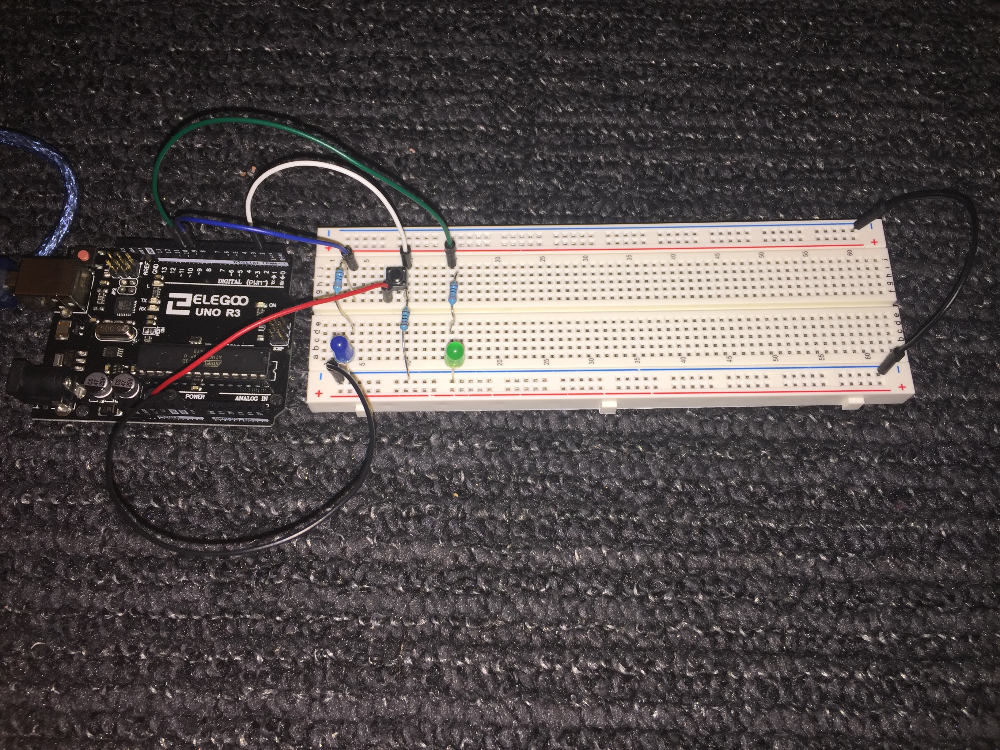

 Image 1. The final product of assignment two, a circuit with a green LED, a blue LED, and a button to switch between them.
Here is all the documentation for assignment 2!
//initializes a variable for determining if the button is pressed
int buttonState = 0;
void setup() {
//establishes built in led as an output
pinMode(13, OUTPUT);
//establishes green led as an output
pinMode(10, OUTPUT);
//establishes blue led as an output
pinMode(9, OUTPUT);
//establishes pin 2 as an input for the button status
pinMode(2, INPUT);
}
void loop () {
//checks to see if button is pressed
buttonState = digitalRead(2);
//if the button is pressed
if (buttonState == HIGH) {
//turn on the built in LED
digitalWrite(13, HIGH);
// fade the brightness using a loop from 255 to 0
for (int i = 255; i > -1; i--) {
//set the green led brightness to the current number of the loop
analogWrite(10, i);
// wait .005 seconds
delay(5);
}
}
// if the button is not pressed
else {
//turn off the built in LED
digitalWrite(13, LOW);
// fade the brightness using a loop from 255 to 0
for (int i = 255; i > -1; i--) {
//set the blue led brightness to the current number of the loop
analogWrite(9, i);
// wait .005 seconds
delay(5);
}
}
}
 Image 4. The circuit operating such that the blue led flashes on and fades off. If the button is pressed, the green led performs the operation instead.
Image 4. The circuit operating such that the blue led flashes on and fades off. If the button is pressed, the green led performs the operation instead.